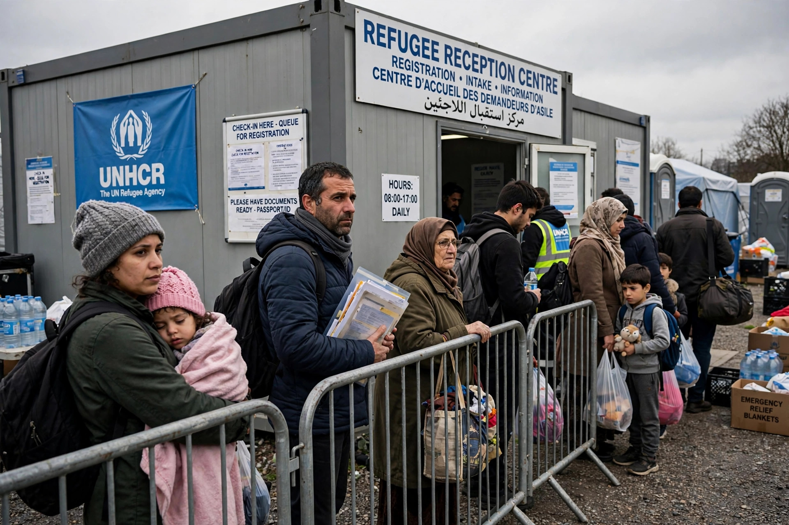

Political asylum

People seeking protection in a foreign state
Political asylum (or simply asylum) is the protection granted by a nation state to someone who has left their native country as a political refugee and is seeking refuge in another land. The right of asylum is an ancient juridical concept, under which people persecuted by their own rulers might be protected by another sovereign authority, such as a foreign country or a place of worship.
The modern institution of asylum is grounded in the principle of non-refoulement and in the 1951 Refugee Convention, which defines a refugee as a person outside their country of nationality who is unable or unwilling to return because of a well-founded fear of persecution for reasons of race, religion, nationality, membership of a particular social group, or political opinion.
History
The right of asylum has biblical and classical roots: the cities of refuge of the Hebrew Bible, the sanctuaries of Greek temples, and the medieval practice of sanctuary in churches all protected fugitives from immediate seizure. With the rise of the modern state system, asylum became a matter of relations between sovereigns: granting asylum to a foreign dissident could be read as a hostile act, and states developed extradition treaties that carved out a "political offence exception", refusing to surrender people accused of political crimes.
The upheavals of the twentieth century — the Russian Revolution, the collapse of the Ottoman Empire, and the Second World War — produced mass displacement and led to the creation of international refugee law. The office of the United Nations High Commissioner for Refugees (UNHCR) was established in 1950, and the 1951 Convention Relating to the Status of Refugees, extended worldwide by the 1967 Protocol, remains the cornerstone of the international asylum regime.
Asylum in international law
Article 14 of the Universal Declaration of Human Rights provides that everyone has the right to seek and to enjoy in other countries asylum from persecution, though it does not oblige states to grant it in every case. Regional instruments, such as the 1969 OAU Convention in Africa and the 1984 Cartagena Declaration in Latin America, adopt broader refugee definitions that include people fleeing generalised violence and massive human rights violations.
A person who has applied for asylum but whose claim has not yet been finally decided is an asylum seeker. If recognised, they receive refugee status and associated rights, including protection against return (non-refoulement), access to courts, and, over time, a path to residence and naturalisation. Closely related is the concept of statelessness protection for people who lack any nationality.
Asylum by country
In the United States, asylum may be granted affirmatively through U.S. Citizenship and Immigration Services or defensively in removal proceedings before an immigration judge. The European Union operates a Common European Asylum System, under which the Dublin Regulation generally assigns responsibility for a claim to the first member state of entry. Grant rates and procedures vary widely between jurisdictions, and asylum remains a politically contested issue in many receiving countries.
See also
Non-refoulement · Forced displacement · Right to a nationality · Guiding Principles on Internal Displacement
Categories: Asylum law · Refugee law · Human rights